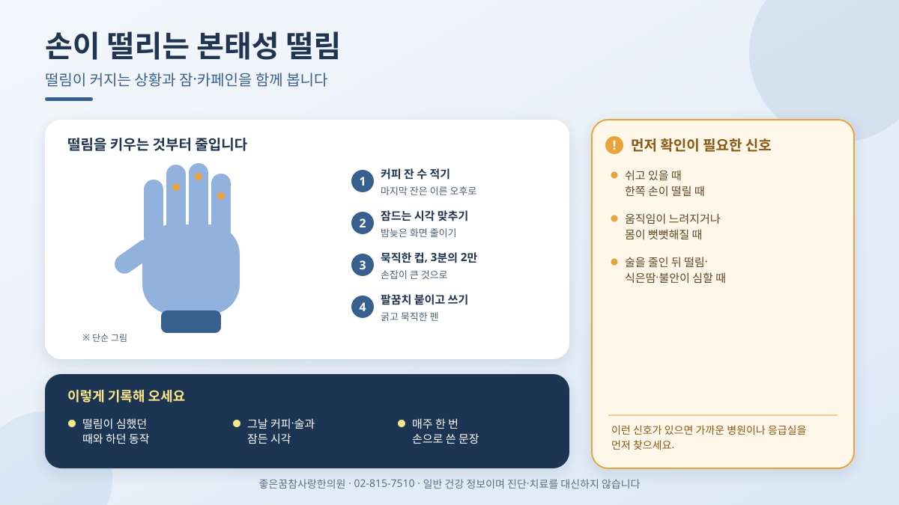

이종호 한의사 감수좋은꿈참사랑한의원 대표원장 (한의사 면허번호 19769)발행 2026-11-26 · 수정 2026-11-26
이 글의 차례
식당에서 국물을 한 숟가락 떠서 입으로 가져가는데, 숟가락이 조금씩 흔들리며 국물이 넘칩니다. 커피잔을 받쳐 들면 잔이 받침에 닿으며 달그락 소리를 냅니다. 은행 창구에서 서명을 하려고 펜을 쥐면 글씨가 삐뚤빼뚤해지고, 뒤에 선 사람이 신경 쓰여 손이 더 떨립니다.
이렇게 무언가를 하려고 손을 쓸 때 떨림이 생긴다면 본태성 떨림을 먼저 떠올려 봅니다. 본태성 떨림은 뚜렷한 다른 병 없이 손이 떨리는 상태로, 떨림 가운데 가장 흔한 편에 속한다고 알려져 있습니다. 부모나 형제 가운데 비슷한 분이 있는 경우가 많고, 나이가 들면서 조금씩 뚜렷해지기도 합니다.
다만 가만히 쉬고 있을 때 손이 떨리거나, 움직임이 느려지고 걸음이 종종걸음이 된다면 다른 원인도 살펴야 합니다. 처음 떨림이 생겼다면 신경과에서 한 번 확인을 받아 두시길 권합니다. 한의원에서는 그 곁에서 잠과 긴장, 카페인, 몸의 리듬을 함께 살핍니다.
진료실에서 이런 말씀을 자주 듣습니다. "남들이 제가 술을 많이 마시는 줄 알까 봐 신경 쓰여요." 어떤 분은 사람들 앞에서 잔을 드는 것이 싫어 회식 자리를 피하게 되었다고 하십니다. 떨림 자체보다 남의 시선이 더 아프다는 말씀이 마음에 오래 남습니다.
왜 손을 쓸 때 떨릴까요
우리 몸은 손을 움직일 때 수많은 근육이 순서대로 힘을 주고 빼며 균형을 맞춥니다. 이 조율을 맡은 뇌의 회로가 조금 예민하게 흔들리면, 손을 쓰는 동안 규칙적인 떨림이 생길 수 있습니다. 본태성 떨림은 이런 조율 회로의 문제로 이해되고 있습니다.
그래서 본태성 떨림은 손을 가만히 무릎 위에 두었을 때보다, 팔을 앞으로 뻗거나, 컵을 입으로 가져가거나, 글씨를 쓸 때 더 뚜렷합니다. 손뿐 아니라 고개가 '예예' 또는 '아니아니' 하듯 흔들리거나, 목소리가 떨리는 분도 계십니다.
긴장하면 더 심해지고, 피곤하거나 잠이 모자랄 때, 커피를 많이 마신 날, 추운 날에 도드라지는 경우가 많습니다. 반대로 술을 조금 마시면 잠시 덜해진다고 느끼는 분도 있지만, 이것을 떨림을 다스리는 방법으로 쓰는 것은 권하지 않습니다. 술에 기대는 습관이 더 큰 문제를 만들 수 있기 때문입니다.
한의학에서는 떨림을 진전(振顫)이라 부르며 살펴 왔습니다. 떨림을 볼 때는 손만이 아니라 잠과 긴장, 체력, 몸이 찬지 더운지, 땀과 가슴 두근거림을 함께 보며 몸 전체가 어떤 상태에서 떨리고 있는지를 읽으려 합니다.
파킨슨병, 갑상선, 약 때문인 떨림과는 어떻게 다를까요
손떨림이 있다고 하면 많은 분이 "혹시 파킨슨병인가요?" 하고 먼저 걱정하십니다. 비슷해 보이는 떨림을 나눠 보면 이렇습니다.
파킨슨병의 떨림
파킨슨병의 떨림은 대개 손을 가만히 쉬고 있을 때 나타나고, 손을 움직이기 시작하면 오히려 잦아드는 경우가 많습니다. 한쪽에서 먼저 시작하는 일이 많고, 움직임이 느려지거나 몸이 뻣뻣해지고, 글씨가 점점 작아지고, 걸음이 종종걸음이 되는 변화가 함께 옵니다. 이런 변화가 보이면 신경과 진료가 먼저입니다.
갑상선 기능 항진
갑상선 호르몬이 많아지면 손끝이 잘게 떨리면서 가슴이 두근거리고, 땀이 많아지고, 더위를 못 참고, 먹는데도 체중이 빠질 수 있습니다. 떨림과 함께 이런 변화가 있다면 내과에서 혈액 검사로 확인을 받아 보세요.
약이나 카페인, 술 때문인 떨림
천식 흡입제, 일부 우울증 약이나 기분 조절 약, 갑상선 약 등이 떨림을 부르기도 합니다. 새로 약을 시작하거나 양을 바꾼 뒤 떨림이 생겼다면 처방한 의사와 상의하세요. 커피나 에너지 음료를 많이 마신 날, 술을 끊거나 줄인 뒤 며칠 사이에도 떨림이 생길 수 있습니다.
긴장할 때의 떨림
발표나 면접처럼 긴장하는 순간에만 손이 떨리고, 편안할 때는 괜찮다면 몸이 긴장에 반응하는 자연스러운 떨림일 수 있습니다. 다만 본태성 떨림도 긴장하면 심해지기 때문에, 편안할 때도 컵을 들면 떨리는지가 나누는 단서가 됩니다.
저혈당
식사를 오래 걸렀을 때 손이 떨리며 식은땀과 허기가 몰려온다면 혈당이 떨어진 신호일 수 있습니다. 당뇨약을 드시는 분은 처방받을 때 들은 대로 단 것을 먼저 드시고, 자주 반복되면 내과에서 상의하세요.
예를 들면 이런 경우입니다
실제 어느 분의 사연이 아니라, 진료실에서 자주 듣는 모습을 바탕으로 그려 본 장면입니다.
예를 들어 부모님도 비슷하게 손이 떨리셨는데, 나이가 들면서 자신도 숟가락질이 조금씩 불편해진 분이 계실 수 있습니다. 이럴 때는 떨림이 언제부터, 어떤 동작에서 시작되었는지와 함께 신경과 확인을 받으셨는지부터 여쭙니다.
야근이 이어지며 커피를 하루 대여섯 잔씩 마시다 보니 키보드 위 손끝이 잘게 떨린다는 분도 있습니다. 이럴 때는 커피 잔 수와 잠든 시각을 같이 적어 보시도록 권합니다. 커피를 한 번에 끊기보다 마지막 잔의 시각을 앞당기는 것부터 해 봅니다.
중요한 발표를 앞두고 리모컨을 쥔 손이 떨릴까 걱정되어 며칠 전부터 잠을 설치는 분도 계십니다. 이럴 때는 떨림 자체와 함께 그 걱정이 만든 얕은 잠을 같이 봅니다. 잠이 무너지면 떨림도 더 도드라지기 쉽기 때문입니다.
떨림을 숨기느라 지친 마음
손이 떨리는 분들은 대개 떨림을 감추는 기술이 늘어 있습니다. 잔을 두 손으로 감싸 쥐고, 서명은 미리 집에서 연습하고, 사람들 앞에서는 손을 주머니에 넣습니다. 그렇게 하루 종일 신경을 쓰다 보면 집에 돌아왔을 때 몸보다 마음이 먼저 녹초가 됩니다.
저는 이런 이야기를 들으면 떨림의 정도만큼이나 그 떨림이 하루를 얼마나 좁게 만들고 있는지를 함께 여쭙니다. 회식을 피하게 되었는지, 글씨 쓰는 일을 남에게 미루게 되었는지, 좋아하던 취미를 내려놓았는지요. 떨림이 크지 않아도 마음이 많이 움츠러들었다면 그것도 충분히 살펴야 할 이유가 됩니다.
나이가 들면서 달라지는 것
본태성 떨림은 대개 천천히 진행하는 편이라고 알려져 있습니다. 몇 해 사이에 조금씩 뚜렷해지기도 하고, 오랫동안 비슷하게 머무르기도 합니다. 그래서 지난해와 올해를 나란히 놓고 보는 기록이 특히 쓸모가 있습니다.
떨림을 가족이 먼저 알아챌 때
본인은 대수롭지 않게 여기는데, 가족이 먼저 "요즘 숟가락이 흔들리네" 하고 알아채는 경우도 많습니다. 그 말을 듣고 서운하거나 덜컥 겁이 나기도 하지요. 하지만 곁에서 본 모습은 진료실에서 아주 좋은 단서가 됩니다.
먼저 이렇게 여쭙니다
처음 오시면 저는 대략 이런 순서로 여쭙습니다. 기억나는 것부터 말씀해 주셔도 괜찮습니다.
- 손이 떨리는 때는 가만히 있을 때인가요, 손을 쓸 때인가요?
- 한쪽 손인가요, 양쪽 손인가요? 고개나 목소리도 떨리나요?
- 부모나 형제 가운데 비슷하게 떨리는 분이 있나요?
- 커피, 에너지 음료, 술은 하루에 얼마나 드시나요?
- 가슴 두근거림, 땀, 체중 변화, 더위를 못 참는 느낌은 없나요?
- 움직임이 느려지거나 걸음이 작아지거나 글씨가 작아지지는 않았나요?
- 최근 새로 시작하거나 바꾼 약이 있나요?
진료실에서는 팔을 앞으로 뻗어 보시기, 손가락으로 코끝 짚기, 컵에 담긴 물 옮기기처럼 간단한 동작을 함께 해 보기도 합니다. 진단을 내리려는 것이 아니라, 어떤 때 떨림이 커지는지 같이 보려는 것입니다.
일상에서 먼저 해 볼 수 있는 것
떨림을 아예 없애는 요령이 아니라, 떨림이 덜 도드라지게 생활을 조금 바꾸는 방법입니다. 지금 할 수 있는 것 하나부터 골라 보세요.
- 커피는 하루 잔 수를 적어 보고, 마지막 잔을 오후 이른 시각으로 당기기
- 잠자리에 드는 시각을 일정하게 맞추고, 밤늦은 화면 보기 줄이기
- 컵은 손잡이가 크고 묵직한 것으로, 물은 가득 채우지 않고 3분의 2만
- 글씨를 쓸 때는 팔꿈치를 책상에 붙이고, 굵고 무게감 있는 펜 쓰기
- 숟가락질할 때는 팔꿈치를 몸 쪽에 붙여 지지하기
- 떨림이 심해지는 상황을 한 줄씩 적어 두기
무게가 조금 있는 물건이 떨림을 덜 도드라지게 하는 경우가 있습니다. 가벼운 플라스틱 컵보다 도자기 머그잔이, 가는 볼펜보다 굵은 펜이 편하다는 분이 많습니다.
긴장하면 떨림이 커지고, 떨림을 의식하면 또 긴장하게 됩니다. 사람들 앞에서 무언가를 해야 할 때는 숨을 천천히 길게 내쉬고, 팔꿈치를 몸에 붙인 채 동작을 작게 하는 연습을 미리 해 두면 마음이 조금 덜 바빠집니다.
떨림과 잠, 그리고 몸의 온도
추운 날 밖에 나가면 떨림이 더 커진다는 분이 많습니다. 몸이 식으면 근육이 긴장하기 쉬워서입니다. 겨울에는 장갑을 끼고 손을 따뜻하게 해 두면, 실내에 들어와 컵을 들 때 조금 편하다는 말씀을 듣습니다.
잠도 떨림과 가깝습니다. 잠이 모자란 다음 날은 손이 더 흔들린다는 분이 많아, 저는 떨림 상담에서도 몇 시에 잠드는지를 빼놓지 않고 여쭙니다.
한의원에서 함께 살필 수 있는 경우
- 신경과 확인을 받았고, 잠과 긴장, 카페인 습관을 함께 살피고 싶은 경우
- 피곤하거나 긴장할 때 떨림이 커지는 흐름을 정리해 보고 싶은 경우
- 손떨림 때문에 사람을 만나는 자리가 부담스러워 마음이 지친 경우
- 떨림과 함께 잠이 얕고, 가슴이 자주 두근거리는 경우
좋은꿈참사랑한의원에 처음 오시면 신경과나 내과 확인 여부와 드시는 약을 먼저 확인합니다. 그다음 양손을 올려 달라고 말씀드리고 맥을 짚으며 잠과 소화, 체온, 땀, 대소변을 여쭙습니다.
진찰 뒤 필요하다고 판단되면 침이나 한약을 상의합니다. 긴장으로 굳은 목과 어깨, 얕은 잠, 쉽게 지치는 체력처럼 떨림을 키우는 바탕을 함께 살피는 경우가 많습니다. 드시는 약이 있다면 모두 알려 주세요. 함께 드셔도 되는지 신중하게 확인하고 정합니다.
처방받은 약은 처방한 의사와 상의 없이 줄이거나 끊지 않습니다. 다시 오시면 지난번 이후 떨림이 심했던 상황과 커피 잔 수, 잠은 어땠는지부터 이어서 여쭙습니다.
이렇게 기록해 오시면 상담이 쉬워집니다
떨림은 진료실에 오면 오히려 덜하거나 더 심해지기도 해서, 평소 모습을 담아 오시면 큰 도움이 됩니다.
- 떨림이 심했던 날짜와 시각, 그때 하던 동작(컵 들기, 글씨, 숟가락질)
- 그날 마신 커피와 술의 양, 잠든 시각과 깬 시각
- 긴장하거나 피곤했던 일이 있었는지
- 같은 문장을 매주 한 번 손으로 써 둔 종이
- 컵을 들거나 글씨를 쓰는 모습을 찍은 짧은 영상
- 드시는 약 이름과 최근 바꾼 약
같은 문장을 날마다 써 두면 떨림의 흐름을 눈으로 비교하기 쉽습니다. 종이에 달팽이 모양 나선을 한 장씩 그려 두는 것도 좋은 방법입니다. 선이 얼마나 출렁이는지, 어느 방향으로 흔들리는지가 말보다 또렷하게 남습니다. 영상은 얼굴이 나오지 않게 손만 찍어 오셔도 충분합니다.
이런 증상은 먼저 확인이 필요합니다
- 가만히 쉬고 있을 때 한쪽 손이 떨리고, 움직임이 느려지거나 몸이 뻣뻣해진 경우
- 술을 끊거나 줄인 뒤 떨림과 식은땀, 불안이 심해진 경우
이런 신호가 있으면 한의원보다 가까운 병원이나 응급실을 먼저 찾으세요.
손이 떨린다는 것은 생각보다 많은 것을 조심스럽게 만듭니다. 잔을 드는 일도, 이름을 쓰는 일도요. 그 마음을 먼저 알아드리고 싶습니다. 떨림을 숨기려 애쓰기보다 무엇이 떨림을 키우는지부터 같이 찾아보겠습니다. 다음에 오시면 지난 2주 동안 커피를 몇 잔 드셨는지, 떨림이 심했던 순간은 언제였는지부터 여쭙겠습니다.
함께 읽으면 좋은 글
- 얼굴 근육이 파르르 떨릴 때는 어떤 점을 먼저 확인하나요?
- 공무원 면접을 앞두고 긴장으로 목소리가 떨릴 때는 어떻게 하나요?
- 가슴이 두근거리고 불안할 때는 어떤 점을 먼저 확인하나요?
- 맥을 짚기 전에 운동이나 카페인은 어떻게 하면 되나요?

여쭙는 것
- 손이 떨리는 때는 가만히 있을 때인가요, 손을 쓸 때인가요?
- 한쪽 손인가요, 양쪽 손인가요? 고개나 목소리도 떨리나요?
- 부모나 형제 가운데 비슷하게 떨리는 분이 있나요?
생활에서 해 볼 것
- 커피는 하루 잔 수를 적어 보고, 마지막 잔을 오후 이른 시각으로 당기기
- 잠자리에 드는 시각을 일정하게 맞추고, 밤늦은 화면 보기 줄이기
- 컵은 손잡이가 크고 묵직한 것으로, 물은 가득 채우지 않고 3분의 2만
한의원에서 함께 살필 것
- 신경과 확인을 받았고, 잠과 긴장, 카페인 습관을 함께 살피고 싶은 경우
- 피곤하거나 긴장할 때 떨림이 커지는 흐름을 정리해 보고 싶은 경우
- 손떨림 때문에 사람을 만나는 자리가 부담스러워 마음이 지친 경우
먼저 확인이 필요한 신호
- 가만히 쉬고 있을 때 한쪽 손이 떨리고, 움직임이 느려지거나 몸이 뻣뻣해진 경우
- 술을 끊거나 줄인 뒤 떨림과 식은땀, 불안이 심해진 경우
한눈에 보는 표
| 구분 | 핵심 |
|---|---|
| 여쭙는 것 | 손이 떨리는 때는 가만히 있을 때인가요, 손을 쓸 때인가요? 한쪽 손인가요, 양쪽 손인가요? 고개나 목소리도 떨리나요? |
| 생활에서 해 볼 것 | 커피는 하루 잔 수를 적어 보고, 마지막 잔을 오후 이른 시각으로 당기기 잠자리에 드는 시각을 일정하게 맞추고, 밤늦은 화면 보기 줄이기 |
| 한의원에서 함께 살필 것 | 신경과 확인을 받았고, 잠과 긴장, 카페인 습관을 함께 살피고 싶은 경우 피곤하거나 긴장할 때 떨림이 커지는 흐름을 정리해 보고 싶은 경우 |
| 먼저 확인이 필요한 신호 | 가만히 쉬고 있을 때 한쪽 손이 떨리고, 움직임이 느려지거나 몸이 뻣뻣해진 경우 술을 끊거나 줄인 뒤 떨림과 식은땀, 불안이 심해진 경우 |
자주 묻는 질문
손이 떨리면 파킨슨병인가요?
손떨림이 있다고 모두 파킨슨병은 아닙니다. 파킨슨병의 떨림은 가만히 쉬고 있을 때 나타나는 경우가 많고, 움직임이 느려지거나 걸음이 작아지는 변화가 함께 옵니다. 걱정되신다면 신경과에서 확인을 받아 보시길 권합니다.
술을 마시면 덜 떨리는데 괜찮은 건가요?
술을 마신 뒤 잠시 덜해진다고 느끼는 분이 있지만, 떨림을 다스리는 방법으로 술을 쓰는 것은 권하지 않습니다. 술에 기대는 습관이 생기기 쉽고, 술을 줄일 때 오히려 떨림이 커질 수 있습니다.
커피를 끊어야 하나요?
한 번에 끊기보다 하루 잔 수를 적어 보고, 마지막 잔의 시각을 앞당겨 2주쯤 지켜보시길 권합니다. 사람마다 카페인에 반응하는 정도가 달라 기록으로 확인하는 것이 좋습니다.
손떨림도 진맥을 보나요?
네, 맥은 모든 분께 짚습니다. 떨림만 보지 않고 잠과 긴장, 체력, 땀과 가슴 두근거림을 함께 여쭈며 몸 전체의 흐름을 살핍니다.
가족에게도 손떨림이 있는데 저도 그렇게 되나요?
본태성 떨림은 가족 가운데 비슷한 분이 있는 경우가 많다고 알려져 있지만, 모두에게 나타나는 것은 아니고 정도도 사람마다 다릅니다. 지금의 떨림이 어떤 모양인지부터 함께 살펴보겠습니다.
좋은꿈참사랑한의원은 재진 때 지난번 이야기부터 이어서 여쭙니다. 진료시간과 예약은 오시는 길에서 확인하세요.
어디서 상담받을 수 있나요?
좋은꿈참사랑한의원은 서울 동작구 만양로2길 2 신성빌딩 3층·5층(서울 동작구 상도동, 7호선 상도역 3번 출구 근처)에 있습니다. 한의사 3명(이종호 대표원장, 조영기 수석진료원장, 정원영 진료원장)이 진료합니다. 진료시간은 평일 09:30~20:00(점심 13:00~14:00), 토·일·공휴일 09:30~15:00이며, 방문 전 전화로 확인을 권합니다. 예약은 네이버 예약, 카카오톡 상담, 전화 02-815-7510로 받습니다.
이 글은 일반적인 건강 정보이며 개인의 진단이나 치료를 대신하지 않습니다. 증상이 있거나 복용 중인 약이 있다면 진료를 통해 확인하세요. 치료 효과는 개인마다 다를 수 있습니다.
작성 기준: 일반적으로 알려져 있는 건강 정보를 참고해 정리했습니다(대표원장 감수). 증상 기록은 1~2주 동안 하루 1회, 비슷한 시간에 적어 오시면 지난 상태와 비교하기 쉽습니다.